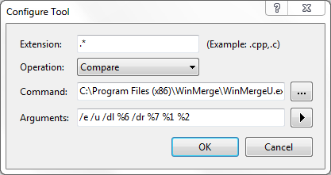

Comparing and merging files are often subtasks in a larger change management process. For that reason, WinMerge is often used not just by itself, but also in conjunction with other tools. In addition, diff and merge utilities provide different features, so it's sometimes handy to combine different tools. This topic describes the primary methods for using WinMerge with other tools.
The WinMerge command-line interface (CLI), described in Command line, enables you to run WinMerge from a Command Prompt window, from scripts, or from another tool or program. Basically, any program that allows you to call an external executable with at least one path, can be used to launch a WinMerge operation.
Here are just a few examples:
-
A batch file can launch WinMerge and enable users to specify parameters interactively:
start "WinMerge" /B "C:\Program Files\WinMerge\WinMergeU.exe" /e /s /u /dl %3 /dr %5 %6 %7
-
The Subversion client allows you to call an external diff program and pass parameters, like this:
$ svn diff --diff-cmd "C:\Program Files\WinMerge\WinMergeU.exe" -x "-dl -dr" myfile
![[Tip]](images/tip.gif) |
Tip |
|---|---|
|
Similarly, many GUI tools (like version control clients and IDEs) that include built-in diff tools enable you to configure WinMerge as their default diff tool, instead. The next section describes how to use WinMerge this way with TortoiseSVN, TortoiseCVS, and ClearCase. For other tools, like Eclipse and Perforce, check their documentation or search the Internet for details and examples. |
You can configure WinMerge to interact with a few supported version control systems (VCS) in two ways. This section describes the two types of VCS integration and provides an example of each.
When you save a file in WinMerge and the file is a versioned ClearCase or Visual Source Safe element, WinMerge can open the VCS's checkout dialog for you. This makes it easy to check out files as you are working in WinMerge. However, WinMerge does not provide checkin or history tools, so remember to check the files in later using the VCS interface.
This integration is available after WinMerge installation. To enable or disable the integration, click → , open the Version Control integration page, and choose the appropriate option.
Example 1. Visual Source Safe integration
Here is a sample file checkout using the VSS integration.
-
Launch a WinMerge file or folder comparison whose left or right target is under version control.
-
In WinMerge, edit a version-controlled file.
-
Save your changes. WinMerge detects that the file is read-only, and assumes that it is under Visual Source Safe version control. WinMerge opens a Visual Source Save dialog, like this:

-
In the Database dropdown list, choose the correct Visual SourceSafe database if there is more than one on your system.
-
The Project field shows the selected file's location relative to the Visual SourceSafe database path. Verify that the path is correct: most errors are caused by the wrong project path. If you change folders, remember to change the project path, too!
-
Enter your password if required. WinMerge remembers your password for the current session, but for your security does not store it. Therefore, you don't need to retype the password during a session, but you must retype the password each time you open WinMerge.
-
Optionally, enable one or both of these options:
-
Link to Destination VSS project
-
Apply to all items. This option enables you to check out multiple files in a single directory when you copy files in a folder compare operation.
-
Unfortunately, VSS provides very little information about error conditions beyond the fact that they occur. If an operation fails, causes might include any of the following conditions:
-
Another user might have the file checked out with exclusive access.
-
You might have specified the wrong project.
-
You might have entered the project name incorrectly.
-
You might not have used a valid VSS path (for example, this is incorrect:
$/MyProject/res). -
Your connection to the VSS server computer might be broken.
When you compare files in TortoiseSVN, TortoiseCVS, or Rational ClearCase, you can have the VCS launch WinMerge instead of its native diff utility. You can configure some of these integrations during WinMerge installation.
Example 2. Tortoise SVN integration
Here is a sample diff operation in TortoiseSVN that uses the WinMerge integration. The integrations with TortoiseCVS and ClearCase are similar.
-
In Windows Explorer, navigate to a Subversion working copy that you have checked out.
-
Right-click a file that is under Subversion management (usually indicated by a distinct TortoiseSVN icon), and click in the context menu.
-
If the file has not been modified, the context menu contains the shortcut, . This command compares the checked-out version of the file with the previous version that was checked in to the repository.
-
If you have modified the file, the context menu contains the same shortcut, plus the shortcut. This command compares your revision to the current version (the one you checked out). It is useful for reviewing the changes you have made.
-
-
Choose either the or shortcut. The WinMerge window opens, with the target file versions loaded In the File Compare window.
The → shortcut is available for comparing any two files in your file system, not just files that are managed by Subversion. To illustrate how the WinMerge integration works in this case:
-
In Windows Explorer, hold Ctrl, select any two files, and right-click.
-
Choose → in the context menu.
The WinMerge window opens, with the selected files loaded In the File Compare window.
Example 3. Visual Studio Team Foundation Server integration
You can manually set up WinMerge as the default tool to use for in Visual Studio to show differences in Team Foundation Server (TFS) Other version control systems can be set up in very similar ways.
-
In Visual Studio, navigate to the → menu.
-
Under , find the options.
-
Click the button.
-
Click the button.
-

Type in the following options in the Configure Tool.
-
Extension: .*
-
Operation: Compare
-
Command: {Path to WinMerge}\WinMergeU.exe
-
Arguments: /e /u /dl %6 /dr %7 %1 %2
Where {Path to WinMerge} is the path were WinMerge is installed. In the above screenshot it is installed to the default installation path C:\Program Files (x86)\WinMerge\WinMergeU.exe
The arguments are described under Command line.
-
Every time you tell TFS to compare two files, it will now use WinMerge.
When you choose the integration option for Rational ClearCase during WinMerge installation, the installer:
-
Creates a backup copy of the ClearCase
mapfile,map.bak, in theccase-home-dir\lib\mgrsmapfile is a user-configurable file that associates ClearCase methods with the programs that carry them out. -
Modifies the text_file_delta field In the
mapfile, specifying WinMerge instead of the defaultcleardiff.exewhen running the cleartool diff command.
If you later want to disable WinMerge interactions with ClearCase,
replace the ClearCase map file created by the
WinMerge installer with the map.bak backup file.
Alternatively, edit the ClearCase map file to run
cleardiff.exe for the cleartool
diff command.